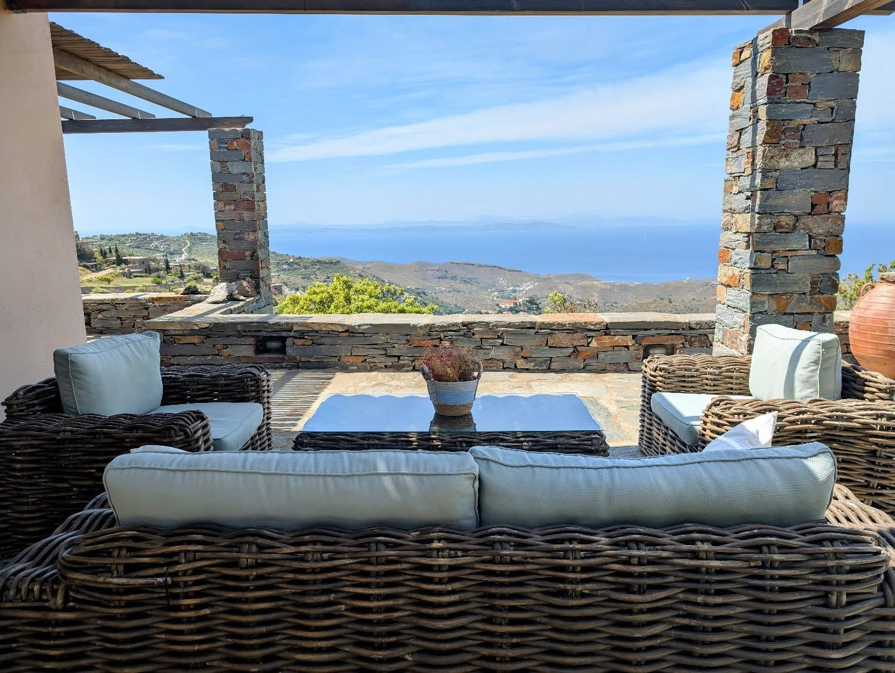
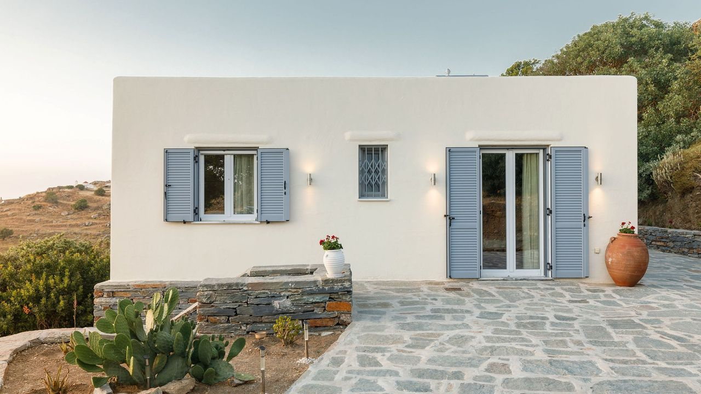
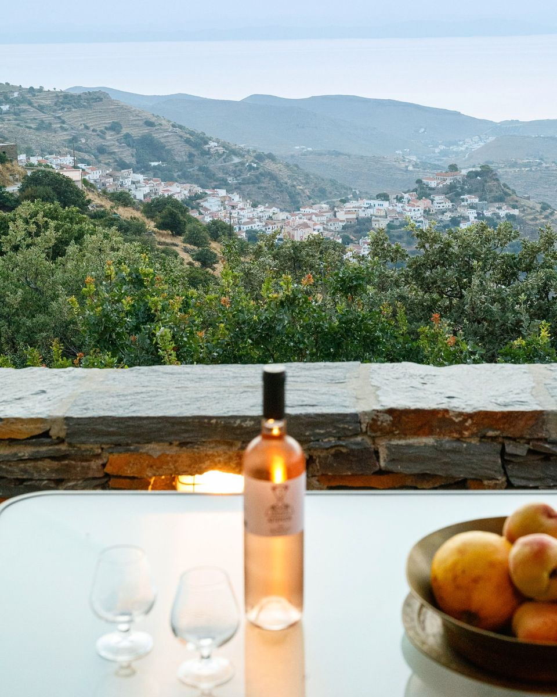

A private villa on Kea, Cyclades Above Ioulida, facing the Aegean.
An elegant Cycladic house for up to six guests, with a shaded terrace that looks straight out to the Aegean.
- 6guests at most
- 3bedrooms, double beds
- 100 m²Cycladic house
- 2cars, private parking
Welcome
White walls, grey stone and a wide view of the Aegean. Cycladic Villa Kea is a house for slow days above Ioulida, with room for six and a terrace that follows the light from morning to sunset.


01 The façadeWhitewash, blue shutters, stone underfoot.

02 On its own landTerraces around the house, the hills and the sea beyond.

03 The living roomDeep sofas in island blue, open to the kitchen.

04 The kitchenFully equipped, with a dining table for meals indoors.


05 The bedroomsThree, each with a double bed.


06 DetailsHand-painted plates, soft linen, blue shutters.
07 In short
- Guests
- Up to 6
- Bedrooms
- 3, all with double beds
- Size
- 100 m²
- Comfort
- Wi-Fi, air conditioning
- Kitchen
- Fully equipped
- Parking
- Private, for 2 cars
- Cost
- €100 per night*
Indicative, to be confirmed
The terrace
Under the pergola, the Aegean in front of you.
Morning
In the morning the pergola throws striped shade across the table. Breakfast happens in the cool, while the hills and the sea are still pale in the distance.
Late afternoon
Later the light turns and falls towards the Aegean. The stone wall warms, the hills go gold, and the sun sets over the sea in front of the main terrace.



Ioulida & Kea
A village of stairways, just below.
The villa sits on the slope above Ioulida, Kea’s hilltop capital. From the terrace wall you look down over its rooftops, lanes and stairways, with oak-covered hills folding away towards the sea.
Kea is the closest of the Cyclades to Athens, about an hour by ferry from Lavrio.
Availability
Tell us your dates.
Send us the dates you have in mind and how many of you are coming. We’ll check availability and reply personally with the total price for your stay.
We reply in English, Greek or French.